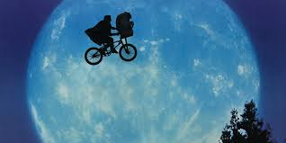
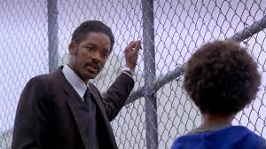
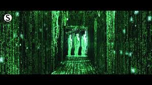

|  |
ET - the Extra Terrestrial - 1982E.T. the Extra-Terrestrial is a 1982 American science fiction fantasy film co-produced and directed by Steven Spielberg, and written by Melissa Mathison. It features special effects by Carlo Rambaldi and Dennis Muren, and stars Henry Thomas, Dee Wallace, Robert MacNaughton, Drew Barrymore, Peter Coyote and Pat Welsh. It tells the story of Elliott (Thomas), a lonely boy who befriends an extraterrestrial, dubbed "E.T.", who is stranded on Earth. |
|  |
The Pursuit of Happyness - 2006The Pursuit of Happyness is a 2006 American biographical drama film based on entrepreneur Chris Gardner's nearly one-year struggle being homeless. Directed by Gabriele Muccino, the film features Will Smith as Gardner, a homeless salesman. Smith's son Jaden Smith co-stars, making his film debut as Gardner's son, Christopher Jr. |
|  |
The Matrix - 1999The Matrix is a 1999 science fiction action film written and directed by The Wachowskis, starring Keanu Reeves, Laurence Fishburne, Carrie-Anne Moss, Hugo Weaving, and Joe Pantoliano. It depicts a dystopian future in which reality as perceived by most humans is actually a simulated reality called "the Matrix", created by sentient machines to subdue the human population, while their bodies' heat and electrical activity are used as an energy source." |